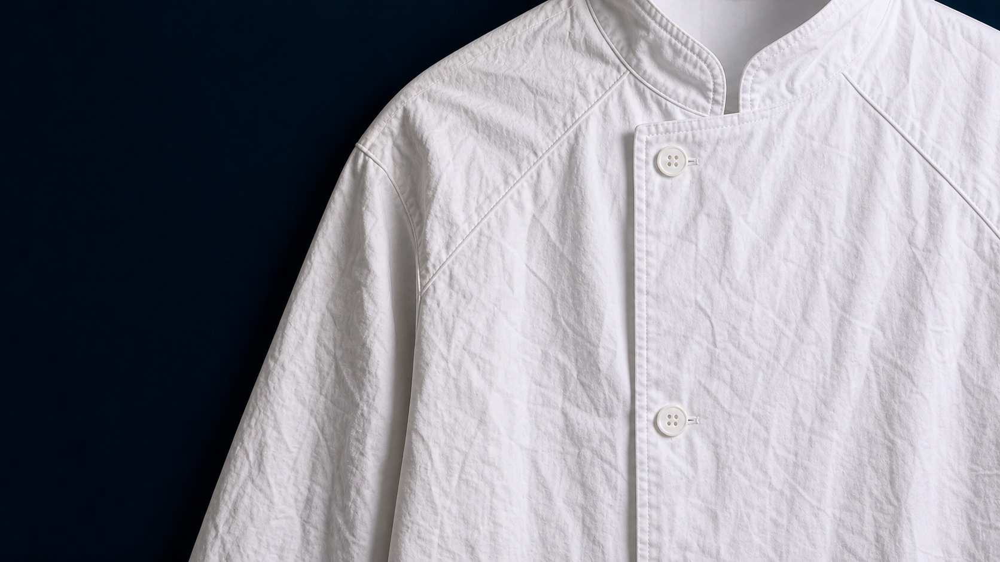
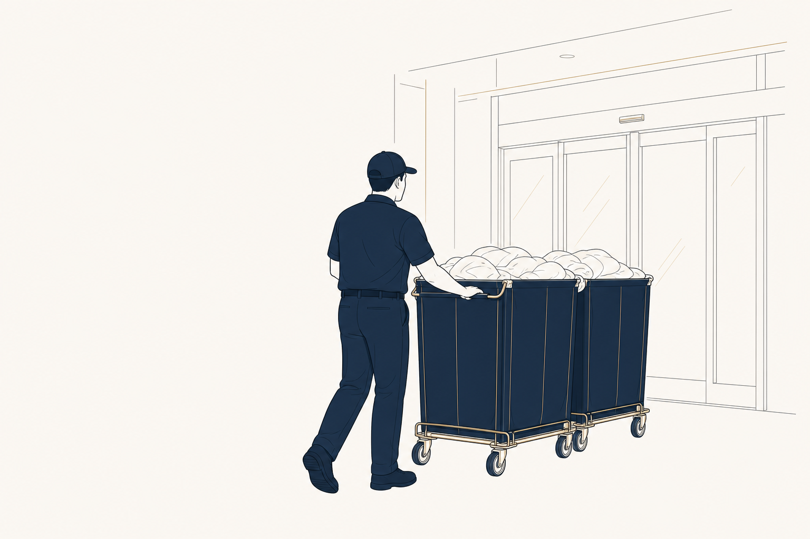
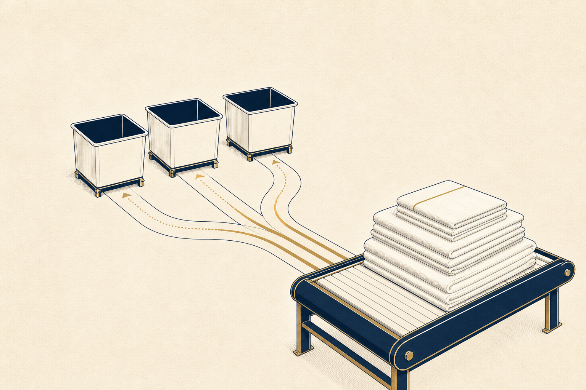
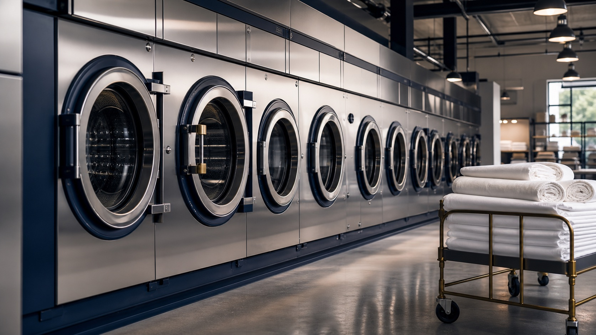
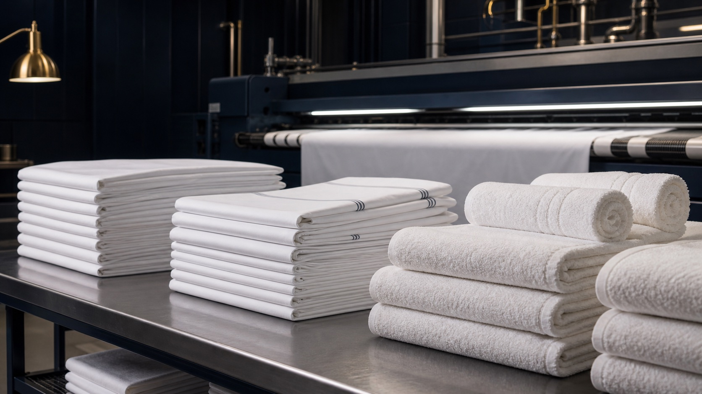
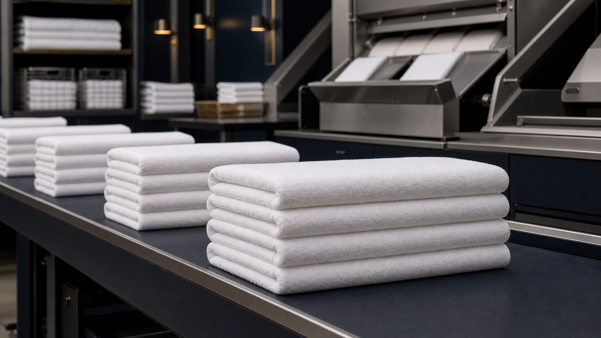
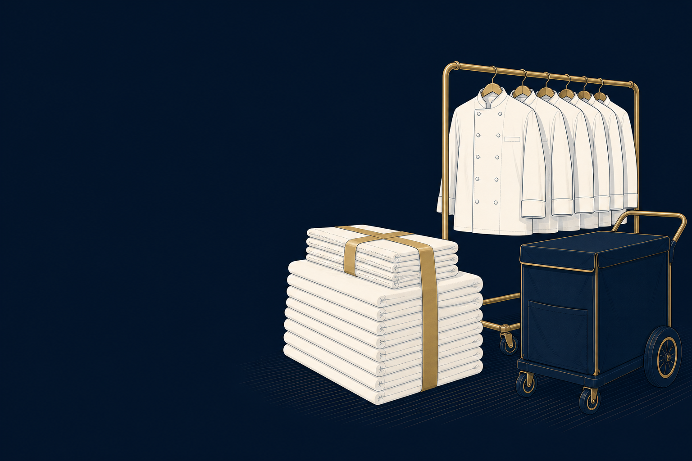

The Shelton process
See what
better care
gives back.
Your laundry has somewhere to be.
One route. One account-specific care path. Follow the goods from pickup through ready return.
Route to San Diego · Pickup → Return
01Pickup
We arrive where the work happens.
Scheduled commercial pickup is built around your operating hours, handoff point, storage, and weekly volume. Bags, carts, bins, or bundles move onto the route without slowing the team inside.
Checkpoint: Arrived

02Sort
The right care path starts before the wash.
Goods separate by item, fabric, color, soil, account, and finishing destination. The system protects the details that make a towel program different from event linen or chef coats.
Checkpoint: Sort complete

03Clean
Cleaned for the item, not just the load.
Commercial washing, wet cleaning, dry cleaning, and specialty care are chosen around soil, fabric, color, repeated use, and the result your team needs back.
Checkpoint: Wash complete

04Finish
The finish follows what happens next.
Pressed for presentation-sensitive sheets, table linen, uniforms, and event goods.
Checkpoint: Finish complete

05Inspect
A close look before the final handoff.
Inspection checks the visible result and the account instructions behind it: remaining spots, finish quality, condition, sorting accuracy, and return readiness.
Checkpoint: Inspection complete

06Package
Organized for the way your team receives it.
Finished goods separate into the return format that makes the next shift easier: linen carts, bags, bundles, labels, or protected hangers.
Checkpoint: Packaged

07Return
Back in your hands. Ready for what comes next.
Rooms, tables, treatment spaces, kitchens, teams, and guests should not have to wait on the laundry. The route closes the loop, then starts it again.
Checkpoint: Delivered
Route Command
Your service, visible from pickup to return.
Route Command brings pickup windows, account details, service updates, and expected return timing into one customer-facing view.
Complete
Your delivery is complete. Today · 12:15 PM- Next pickup window
- Tomorrow · 6:00 AM – 10:00 AM
- Account
- Coastal Medical Center
- Account ID
- 042
- Latest delivery
- Today · 12:15 PM
Your route is complete and ready to begin again.
Customer-facing service statusReady to put the Shelton route to work?